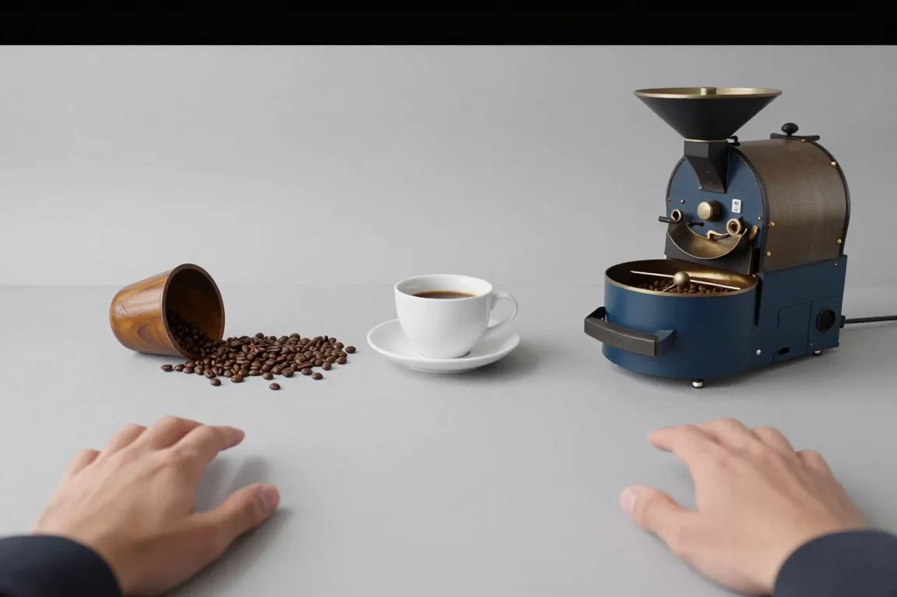

A short clip that shows a scene as if the viewer is a character: the camera is the viewer's eyes and the actor talks straight to the lens. A text line that starts with "POV:" sets the scene.

Core thesis
Make the viewer the second person in the scene: the caption names the situation, the lens is the viewer.
Design principles
Start the clip with a title line that begins with "POV:" at 48 px, centred at 18% of the frame height.
Shoot with a phone held at eye level, a wide lens of 24 mm equivalent, and a small, steady shake.
Have the actor look into the lens for at least 60% of the clip.
Keep the clip between 7 s and 20 s, with one joke or turn at the end.
Use a single room and 1 to 2 props.
Put the 1 line caption in white on a 70% black bar, 40 px, so the situation is clear.
Cut once or twice at most; hold the take for 3 s to 8 s.